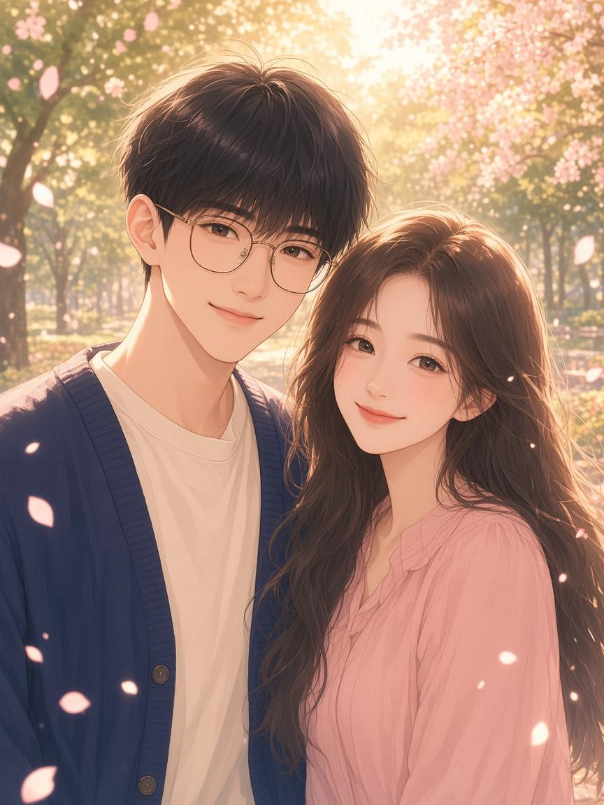

给刘韵秋 · 王海旭

准备开始…
亲爱的韵秋：
我们是在小红书认识的。那时候你特别热情，总是记得嘘寒问暖，问我吃了没、睡了没、冷不冷。明明隔着屏幕，我却觉得被好好照顾着。那段日子天天都很开心，我到现在都记得那种感觉——原来被一个人放在心上，是这样温柔。
你天天在机场上班，班次长，人来人往，一定很累。可哪怕再忙，以前你下班之后，也还会来找我一起打王者。那几个小时对我来说不只是游戏，更像是一天里最安心的约定：你结束了一天的奔波，我刚好能陪着你放松一会儿。
10月14日，我们在济南见面了。大明湖的风，趵突泉的水，经三路老商埠的街巷，都因为有你，变得不一样。那天你做了留洋大小姐的妆造，特别美——不是网上那种模板的美，是站在我面前、会笑、会看向我的美。我一路走一路看你，心里反复只有一句话：幸好来见你了。
可是现在你更忙了。有时候连视频电话都打不上，回复也没有以前那么快、那么热。我不是不懂，机场的工作本来就辛苦，忙起来顾不上也很正常。我不会怪你，更不会因此觉得你变了。我只是偶尔会想你，想听你说今天累不累，想再一起开一局王者，想再看一次你笑起来的样子。
还有一件事，我想轻轻说给你听。我知道你一直在减肥，可你的方法太狠了——常常不吃不喝，快要饿晕了才肯吃饭；也不爱喝水，一天几乎靠咖啡撑着。韵秋，我心疼你。你可以想变美、想变轻盈，但我更想你健康、有力气、能好好站完一天的班。饿到发晕不是坚强，是身体在求救。
请你听清楚：我一点也不嫌弃你。你胖一点、瘦一点，在我这里都没有关系。我喜欢的是刘韵秋这个人——会关心人的你，会打王者陪我的你，济南街头笑着看我的你。不是某一个数字，不是某一件衣服的尺码。你好好吃饭、多喝一点水，比什么都重要。咖啡可以喝，但别让它取代三餐和清水，好不好？
所以我想认真告诉你：刘韵秋，我爱你。爱那个热情、会照顾人的你，爱那个下班还愿意打游戏陪我的你，爱济南街头那个留洋大小姐妆造的你，也爱现在忙碌、有点顾不上、但依然是你的你——不论胖瘦，都是你。
你忙的时候，我就在这里等你。等你下了班，等你有空回一句，等你哪天又说“开一把”。不用勉强自己时刻热情，也不用担心我会走开。你安心做你的事就好，也请你对自己温柔一点：按时吃饭，记得喝水。剩下的想念，交给我来保存。
我爱你，刘韵秋。今天，明天，很多很多天。
永远爱你的
王海旭